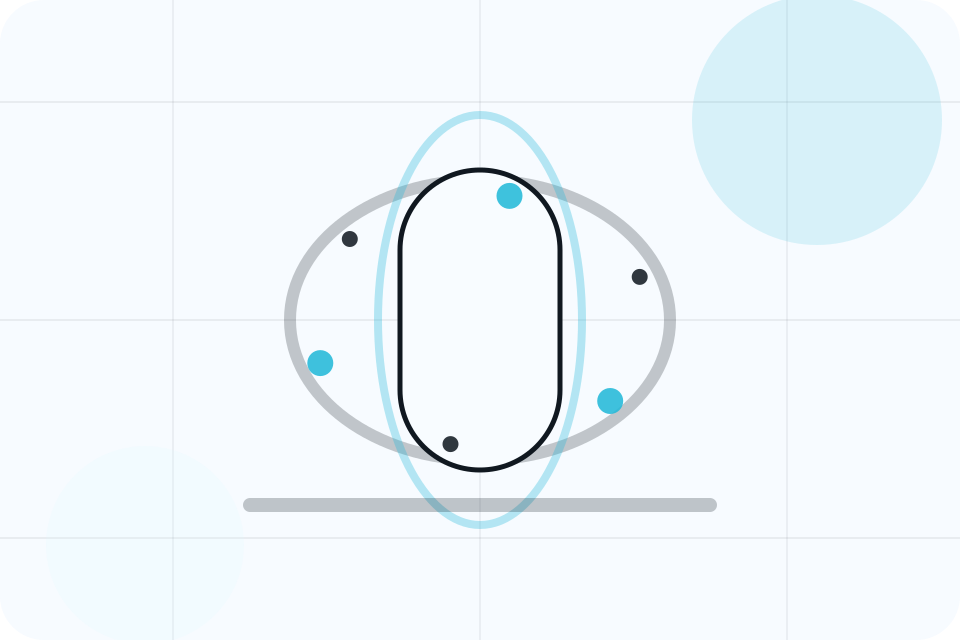

Fit
Who the offer is for, which scope it suits, and when a different route may be better.
Pricing / 01
Pricing opens as a clear healthcare decision hub: what Aster offers, who it helps, why it matters, and which route to take first.
The first screen combines positioning, proof, primary action, and fast internal navigation, so people can act immediately or compare the rest of the pricing route with context.
Body scan split hero
Select the closest route and Aster keeps the next step, proof, and follow-up expectation aligned with fear reduction and care confidence.

Pricing / 02
Fees makes commercial comparison easier by showing fit, scope, and terms before healthcare visitors ask for the next step.
The layout keeps price-sensitive decisions honest: it separates starting scope, fuller delivery, and ongoing support so the visitor can ask a sharper question.
View PricingWho the offer is for, which scope it suits, and when a different route may be better.
What is included clearly enough for healthcare, medical services & patient care visitors to compare value without hidden jargon.
The practical details that should be confirmed before someone asks to book an appointment.
Who the offer is for, which scope it suits, and when a different route may be better.
ScopedWhat is included clearly enough for healthcare, medical services & patient care visitors to compare value without hidden jargon.
QuotedThe practical details that should be confirmed before someone asks to book an appointment.
RetainerPricing / 03
Consults makes commercial comparison easier by showing fit, scope, and terms before healthcare visitors ask for the next step.
The layout keeps price-sensitive decisions honest: it separates starting scope, fuller delivery, and ongoing support so the visitor can ask a sharper question.
Explore PricingWho the offer is for, which scope it suits, and when a different route may be better.
What is included clearly enough for healthcare, medical services & patient care visitors to compare value without hidden jargon.
The practical details that should be confirmed before someone asks to book an appointment.
Pricing / 04
Procedures makes commercial comparison easier by showing fit, scope, and terms before healthcare visitors ask for the next step.
The layout keeps price-sensitive decisions honest: it separates starting scope, fuller delivery, and ongoing support so the visitor can ask a sharper question.
Explore PricingWho the offer is for, which scope it suits, and when a different route may be better.
Pricing / 05
Packages makes commercial comparison easier by showing fit, scope, and terms before healthcare visitors ask for the next step.
The layout keeps price-sensitive decisions honest: it separates starting scope, fuller delivery, and ongoing support so the visitor can ask a sharper question.
View PricingWho the offer is for, which scope it suits, and when a different route may be better.
What is included clearly enough for healthcare, medical services & patient care visitors to compare value without hidden jargon.
The practical details that should be confirmed before someone asks to book an appointment.
Who the offer is for, which scope it suits, and when a different route may be better.
ScopedWhat is included clearly enough for healthcare, medical services & patient care visitors to compare value without hidden jargon.
QuotedThe practical details that should be confirmed before someone asks to book an appointment.
RetainerPricing / 06
Insurance makes commercial comparison easier by showing fit, scope, and terms before healthcare visitors ask for the next step.
The layout keeps price-sensitive decisions honest: it separates starting scope, fuller delivery, and ongoing support so the visitor can ask a sharper question.
Explore PricingWho the offer is for, which scope it suits, and when a different route may be better.
What is included clearly enough for healthcare, medical services & patient care visitors to compare value without hidden jargon.
The practical details that should be confirmed before someone asks to book an appointment.
Pricing / 07
Payments makes commercial comparison easier by showing fit, scope, and terms before healthcare visitors ask for the next step.
The layout keeps price-sensitive decisions honest: it separates starting scope, fuller delivery, and ongoing support so the visitor can ask a sharper question.
Explore PricingAster frames payments around fit, scope, and terms so visitors can compare cost without losing the outcome.
Book AppointmentPricing / 09
Clarity makes commercial comparison easier by showing fit, scope, and terms before healthcare visitors ask for the next step.
The layout keeps price-sensitive decisions honest: it separates starting scope, fuller delivery, and ongoing support so the visitor can ask a sharper question.
Explore PricingWho the offer is for, which scope it suits, and when a different route may be better.
What is included clearly enough for healthcare, medical services & patient care visitors to compare value without hidden jargon.
The practical details that should be confirmed before someone asks to book an appointment.
Pricing / 10
Aster closes the pricing route with a clear action, a quick reminder of the value, and a low-friction way to book an appointment.
Visitors who are ready can use the primary action. Visitors who are still comparing can scan the section links, proof, and support routes before they book an appointment.
Book AppointmentThe final block keeps the choice simple: act now, compare one more proof route, or send enough detail for a focused response.
Book Appointmentfear reduction and care confidence
A scan-first care journey with minimalist copy, body-data panels, instant-results proof, and a direct appointment CTA. Pricing ends with a direct path to book an appointment, plus enough context for visitors who still need to compare.
Information supports planning and is not a diagnosis or emergency instruction. People should use local emergency services for urgent symptoms.